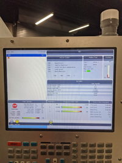
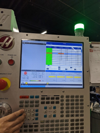
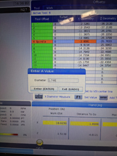
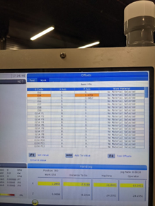
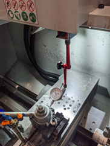
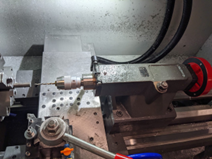

CNC Lathe Work
These are the instructions for lathe work in the CNC shop
Face off Stock
Hit “MDI”
Type in rpm with number pad (rpm depends on material)
Hit ‘FWD’
Handle jog tool to face until it takes off small portion of front face
Hit “STOP” to stop chuck
Tool Offset
Put Stock in chuck Do not forget to remove chuck key
Select MDI
Screen should look like this
Make sure the Tx is highlighted, then hit DELETE
Type in Tx (x=tool number)
Hit ENTER
Cycle tool
Close doors, hit ‘cycle start’ twice
Screen should look like this
Zeroing tool in Z axis
Make sure the correct tool is selected and in machine (“spindle” will be shown next to tool the machine thinks is in machine)
Place Blue Magnetic Block gauge on chuck
Handle jog tool end onto silver circle until gauge goes 1 full revolution back to 0
Move cursor to selected z geometry for the tool in question
Click ‘Z face measure’
This should change the value in orange box
Zeroing tool in x axis
Handle jog tool closer to stock until barely scraping while spinning chuck by hand
Make sure orange box is over the x geometry for tool
Press ‘X diameter measure’
Type in measured value (see value under WORK G54)
Screen should look like this
Work Offset (tells machine where front face of stock is)
Face off stock and keep the z position the same place
Go to ‘Work Offsets’ on screen
Select G54
Press ‘Z face Measure’ to put in Z value for work offset
Screen should look like this
Square Off Parting Tool
Set up tool as shown
Handle Jog tool back and forth in z direction to see how much needle moves
Adjust tool as needed
CAM Upload
Insert USB
Select ‘list program’
Select ‘USB’
Select program
Press ‘memory’
Cycle start machine
Crap your pants while you watch the machine run a program someone else made
Warning
Always have hands on ‘Feed hold’
Note
To Stop: Press ‘Feed Hold’ then ‘stop’
Drilling
Load drill bit into bit chuck
Adjust bit chuck to be close to stock
Should look like this:
Turn on lathe at chosen rpm
Turn red wheel on back to drill into/out of stock (CW to drill in, CCW to drill out)
Note
When drilling, periodically remove drill out of stock to clear material
Manual Adjustment of Tool Offset
Go to Z Geometry
Type in amount required to adjust
Cycle tool